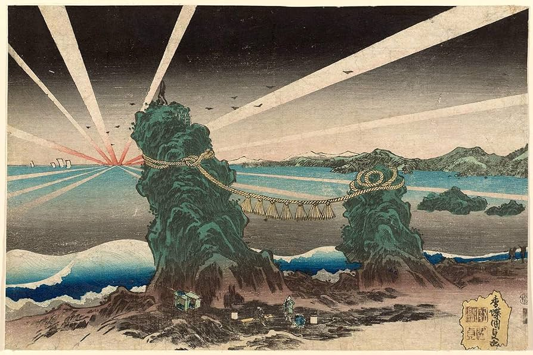
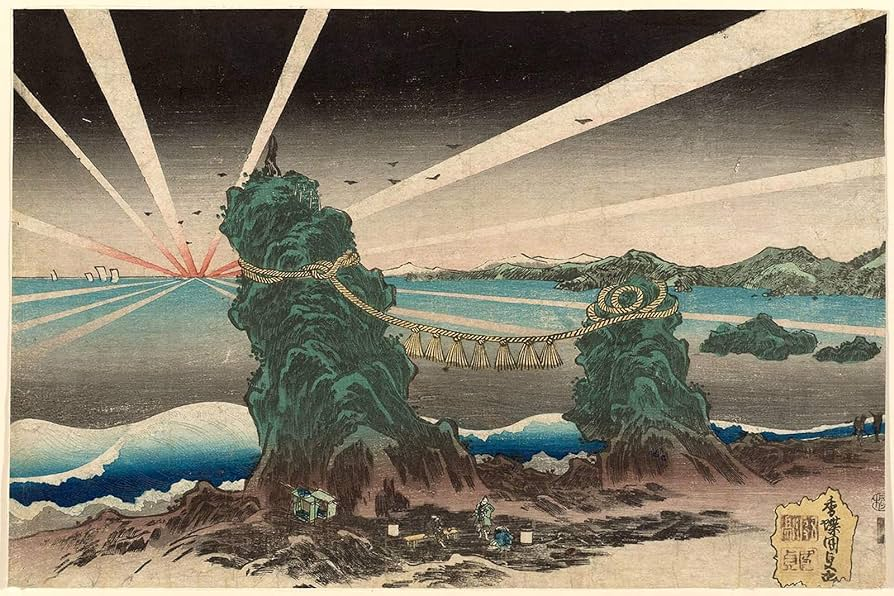
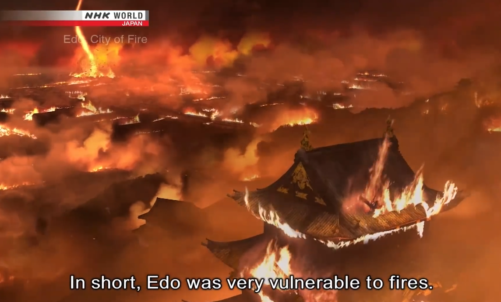

PERIODO EDO
Japón fue el único pais de Asia que pudo hacer frente a las potencias occidentales, gracias a la prosperidad del periodo edo...
SHOGUNATO TOKUGAWA
El shogunato de Edo fue inaugurado por el Primer Shogun del Shogunato " fue el gobierno militar establecido en Japon con breves interrupciones hasta la restauracion Meiji en 1868. La cabeza del Shogunato era el shogun (el lider militar supremo de Japon) El emperador tenia un papel ceremonial y simbólico. Pero no tenia poder politico afectivo." Edo, Ieyasu Tokugawa, gobernante supremo del periodo de los Estados en guerra "Figura historica o lider que ejercio un poder o control supremo durante el periodo conocido como "Periodo de los estados en Guerra" en la historia de China. Este periodo tuvo lugar durante la dinastia Zhou de China y se caracterizo por la fragmentacion del pais en numerosos estados beligerantes que luchaban por el control y la supremacía." Al principio su poder era inestable porque aun no había tomado el poder por completo. Para afrontar esta situacion, el gobierno de Tokugawa adopto diversas medidas para hacer frente a esta situación. Los daimyo de cada region se distinguian en dos grupos:Los "daimyo "Traducido comunmente como "Gran nombre" o "Gran señor". Eran lideres de territorios o dominios regionales conocidos como "han". Los daimyos eran poderosos y gobernaban sus dominios con relativa autonomia, pero estaban obligados a jurar lealtad al shogun. Los daimyos mantenian sus ejercitos. Recaudaban impuestos y gestionaban los asuntos internos de sus dominios. Siendo responsables de mantener la paz y el orden en sus territorios." Fudai" y los "daimyo "Traducido comunmente como "Gran nombre" o "Gran señor". Eran lideres de territorios o dominios regionales conocidos como "han". Los daimyos eran poderosos y gobernaban sus dominios con relativa autonomia, pero estaban obligados a jurar lealtad al shogun. Los daimyos mantenian sus ejercitos. Recaudaban impuestos y gestionaban los asuntos internos de sus dominios. Siendo responsables de mantener la paz y el orden en sus territorios." Tozama". Solo los Fudai, señores feudales hereditarios que eran vasallos de la familia tokugawa que habian apoyado a Ieyasu desde tiempos inmemorables podian participar en la politica del pais. Mientras que los Tozama, eran antiguos vasallos de Oda o Toyotomi que eran leales a los Tokugawa no participaban en la politica por la falta de confianza. Por esta razon, a los Tozama se les otorgaba feudos lejos de EDO, mientras que zonas mas cercas de EDO fueron los feudos de los daimyo, a los que se les encomendó la funcion de proteger EDO.
Muchos señores feudales que no se dedicaban a la politica estaban obligados a realizar visitas por lo que los daimyo debian viajar de ida y vuelta entre EDO y sus propios dominios cada dos años, e incluso si el daimyo abandonaba EDO, su esposa y herederos debian residir en EDO permanentemente.
Este era un sistema de rehenes para evitar la rebelión, todos los gastos del transporte y alojamiento corrian a cargo de los señores feudales que tenían que soportar una enorme carga. El coste de la visita del daimyo era tan grande que les resultaba impensable rebelarse, de hecho el desarollo del periodo EDO se debio en gran parte a estas visitas.
ESTRUCTURAS
Tokugawa leyasu fue shogun por 2 años, despues de eso tomo el titulo de ogoso, es decir Shogun enclaustrado ", aunque ya no ocupaba el cargo de shogun activo, seguía teniendo una influencia significativa en el gobierno y en los asuntos de Japón" . Avdico a favor de su hijo Hidetada. Aun que siguio teniendo el poder total hasta su muerte. En estos años, leyasu mando a reconstruir el castillo EDO que estaba en ruinas. Ademas, ordeno la construccion del castillo Nagoya. Que se convirtió en uno de los mas importantes e imponentes del perido EDO. otro importante es el castillo de Kumamoto, situado en la ciudad de Kumamoto. Considerado uno de los mas bonitos de Japon. La gran mayoría de los castillos que se conservan actualmente son de la epoca EDO, debido que con la paz no fueron destruidos.REBELION
El gran problema del mandato de leyasu fue la rebelion de Tomoyomi Hideyori, del clan Toyotomi. Senhime, hija de Tokugawa Hidetada (hijo de Ieyasu Tokugawa), se casó con Toyotomi Hideyori en un intento de reconciliación entre los clanes Toyotomi y Tokugawa después de la Batalla de Sekigahara en 1600. " La Batalla de Sekigahara en 1600 fue un importante enfrentamiento militar en el período Sengoku de Japón. En esta batalla, Tokugawa Ieyasu derrotó a las fuerzas de Ishida Mitsunari, consolidando su poder y estableciendo el shogunato Tokugawa. Esta victoria llevó a la unificación de Japón bajo el liderazgo de Ieyasu como shogun y marcó el inicio del período Edo en la historia de Japón."Toyotomi Hideyori era el hijo de Toyotomi Hideyoshi y defendió el castillo de Osaka contra las fuerzas de Ieyasu Tokugawa en el asedio de Osaka en 1614 y 1615 (este asedio se debia por el control del poder, disputa territorial, tensiones acumuladas y desconfianza y finalmente desconfianza y rivalidad.) pero finalmente fue derrotado y murió. Senhime desempeñó un papel importante como vínculo entre ambas familias.
Los samurais tambien se vieron obligados a sufrir grandes cambios al entrar en el periodo EDO. tras el final del periodo de los Estados Guerreros y la llegada de la paz, su poder militar dejo de ser util. Sin embargo el shogun y los señores de los distintos clanes debian mantenerlos. Los samurais debian servir a sus señores como funcionarios administrativos, por esta razon a los samurais del periodo edo se les exigia un nivel cultural muy alto. Una parte importante de esta cultura era el confucianismo, especialmente los Estudios Zhuji " Son estudios originarios de China que se enseñaban principalmente la lealtad al señor y la piedad filiar a los padres." Esta era una forma muy conveniente para que el shogunato gobernara al prueblo.
LA BATALLA DE OSAKA
fue un conflicto militar que tuvo lugar en Japón durante los años 1614-1615, en el período conocido como el Periodo Edo. Fue librada entre las fuerzas del shogunato Tokugawa y los partidarios del clan Toyotomi, liderados por Toyotomi Hideyori. La batalla se libró principalmente en el castillo de Osaka y sus alrededores.
Fue el clímax de un largo conflicto entre el shogunato Tokugawa y el clan Toyotomi por el control de Japón.Hideyori Toyotomi murió durante la batalla, y el castillo de Osaka fue destruido. Esta batalla tuvo un papel crucial en la unificación de Japón
bajo el shogunato Tokugawa y marcó el fin de las luchas internas que habían plagado el país durante mucho tiempo.
CAMBIOS EN LOS SAMURAIS
Por cierto, los samurais del periodo de los Estados en Guerra cambiaban con frecuencia de amo. Eran libres de renunciar a un señor cuyas opiniones no coincidian con las suyas. Sin embargo, renunciar a su señor no estaba permitido en el periodo EDO cuando la lealtad se consideraba importante. Ningun otro clan aceptaria a un samurai que hubiera renunciado a su señor y abandonado su clan. No tendria mas remedio que convertirse en Ronin. Asi, a traves de los estudios Zhuji "Son estudios originarios de China que se enseñaban principalmente la lealtad al señor y la piedad filiar a los padres." , el shogunato de EDO consiguio gobernar estrictamente a los samurais.El hijo mayor de una familia samurai en el periodo EDO heredaba la familia. Mientras que los hermanos menores debian cuidar a su hermano mayor, estudiar para mantenerse y si tenian la fama de ser inteligentes y bien educados podrian ser adoptados por una familia de samurais que no tuviera hijos varones que les sucedieran.
Tambien dio lugar al sistema "Es la venganza de los enemigos" . Un samurai cuyos padres hubieran sido asesinados no podia heredar su propia casa a menos que el mismo matara al asesino si no podía encontrarlo. Un samurai que no puede vengar a sus padres no esta capacitado para ser un samurai. Si no se encuentra al culpable y se le da muerte, la familia quedara aislada a lo largo de 200 años en el periodo EDO la etica del samurai se ha elevado al limite. Volviendose el seppuku " forma ritual de suicidio por desentrañamiento que se practicaba en japon, especialmente en samurais como un acto de honor y redencion. Este acto era una respuesta a la verguenza personal, deshonra o culpabilidad. Siendo una forma de recuperar el honor perdido, o mantener la lealtad a un señor o maestro. " el alma del samurai.
FIN DEL PERIODO
En el siglo XIX, tras la caída del shogunato Edo, Japón adopto la civilización occidental y en poco tiempo gano la guerra chino japonesa y la guerra ruso japonesa. El emperador Meiji regresaría al poder en el 1868 que marcaria el final del Shogunato Tokuwaga. Se marco el fin del "sakoku". El pais comenzó a establecer relaciones comerciales y diplomaticas con Occidente, lo que resulto en tratados desiguales con potencias extranjeras. Se fomento a la inversión extranjera y la importacion de tecnología. se abolieron las clases sociales tradicionales como los samuráis y se promovió la igualidad ante la ley. Se introdujeron sistemas educativos basados en modelos occidentales. Siendo la via importante para la modernizacion y la adopcion de conocimiento. Se creo un ejercito siguiendo modelos occidentales, lo que convertiria a Japon en una potencia mundial. Finalmente adopttando la civilizacion occidental, reflejandose en la moda, arquitectura, alimentacion y otros aspectos en la vida cotidiana.Aclaracion: El periodo EDO debe su nombre a que durante el período feudal de Japón, la capital de facto del país era Edo. Elegida por su ubicacion estratégica.
Division social

Aclaracion: Esta división social/ jerarquia esta basada del pensamiento confuciano.
- Emperador: El emperador de Japón ocupaba la posición más alta en la jerarquía social, pero durante el período Edo, su poder real se había debilitado significativamente. Aunque era la figura simbólica de la nación, el emperador tenía un papel ceremonial y no ejercía un control efectivo sobre el gobierno.
- Shogun: El shogun era el líder militar más poderoso en Japón durante el período Edo. Era el gobernante de facto y tenía el control del gobierno central. El título de shogun se pasaba por herencia en la familia Tokugawa durante gran parte del período Edo.
- Daimios: Los daimios eran señores feudales que gobernaban sus propios dominios llamados "han". Eran vasallos del shogun y estaban obligados a prestarle lealtad y apoyo militar. Controlaban sus tierras y gobernaban a su gente de manera autónoma.
- Corte imperial y nobleza (Kuge): La corte imperial se refería a la familia imperial y la nobleza que rodeaba al emperador. La nobleza Kuge era una clase aristocrática de funcionarios y cortesanos que se ocupaban de asuntos ceremoniales y culturales en la corte imperial. Durante el período Edo, su poder político era limitado.
- Órdenes religiosas: Japón tenía varias órdenes religiosas, siendo el budismo y el sintoísmo las principales. Los monjes budistas y los sacerdotes sintoístas desempeñaban un papel importante en la vida religiosa y espiritual de la sociedad.
- Samuráis: Los samuráis eran guerreros y la clase militar dominante en la sociedad japonesa durante el período Edo. Seguían el código moral conocido como "Bushido", que enfatizaba la lealtad, el honor y el deber. Trabajaban para los daimios y constituían la clase gobernante.
- Campesinos: Los campesinos eran la mayoría de la población y trabajaban la tierra en los dominios de los daimios. Proporcionaban alimentos y recursos a la sociedad y estaban sujetos a impuestos y regulaciones impuestas por los daimios.
- Chonin/Artesanos/Comerciantes: Los chonin eran una clase social formada por artesanos y comerciantes. A pesar de ocupar una posición social inferior, desempeñaban un papel vital en la economía de la época, ya que contribuían al crecimiento de las ciudades y al comercio.
- Parias y Ronin: Los parias eran personas marginadas y excluidas socialmente debido a diversos motivos, como la criminalidad o la pertenencia a grupos estigmatizados. Los ronin eran samuráis sin señor, a menudo debido a la pérdida de su maestro o daimio. Podían ser desempleados y desfavorecidos.
- Hinin y Eta: Los hinin eran una clase social marginada en la sociedad japonesa, a menudo considerada como "no humanos". Eran personas excluidas debido a ocupaciones impuras o actividades sociales marginales. Los eta, por otro lado, eran una clase baja asociada con trabajos considerados impuros, como el manejo de cadáveres y la ejecución de animales.
RINASCIMIENTO DEL PERIODO EDO
El Renacimiento Cultural de Japón, conocido como "Rinascimento", ocurrió durante el período Edo, que se caracterizó por la estabilidad política y la paz relativa bajo el gobierno del shogunato Tokugawa (1603-1868). Durante este tiempo, se produjo un florecimiento cultural y artístico en Japón, y surgieron muchas de las tradiciones culturales que siguen siendo importantes en la sociedad japonesa actual, como la ceremonia del té (chanoyu), el teatro Kabuki " El kabuki (歌舞伎) es una forma de teatro japonés tradicional que se caracteriza por su drama estilizado y el uso de maquillajes elaborados en los actores." , la pintura Ukiyo-e "Ukiyo-e (浮世絵?) —traducido del japonés, «pinturas del mundo flotante»— o estampa japonesa es un género de grabados realizados mediante xilografía o técnica de grabado en madera, producidos en Japón entre los siglos XVII y XX, entre los que se encuentran imágenes paisajísticas, del teatro y de zonas de alterne." y la literatura Haiku "El Haiku es un tipo de poesía japonesa breve, compuesto por tres versos con una estructura de sílabas de 5, 7 y 5. Aunque se debate sobre la variedad de sílabas en los haikus clásicos y modernos, la esencia del haiku radica en su capacidad de transmitir mucho con brevedad. Según Octavio Paz, un haiku se divide en dos partes: una que establece el contexto y la ubicación temporal y espacial, y la otra que presenta un elemento sorprendente y activo. La interacción entre estas dos partes da lugar a la percepción poética, y el haiku se caracteriza por su humor seco y directo, capaz de revelar una realidad oculta. " .Los ukiyo-e se desarrollaron y florecieron durante este período, especialmente en los siglos XVII y XVIII. Estas obras de arte eran muy populares y representaban escenas de la vida cotidiana, paisajes, actores de Kabuki " El kabuki (歌舞伎) es una forma de teatro japonés tradicional que se caracteriza por su drama estilizado y el uso de maquillajes elaborados en los actores." , cortesanas y otras imágenes que reflejaban la cultura urbana y el espíritu de la época.
Uno de los artistas más famosos asociados con los ukiyo-e es Hokusai Katsushika, conocido por su serie "Treinta y seis vistas del monte Fuji", que incluye la famosa obra "La gran ola de Kanagawa". Otro artista influyente fue Hiroshige Utagawa, conocido por su serie "Cincuenta y tres estaciones del Tōkaidō" y tambien "Amenecer en Futamigaura" Estas impresiones en madera jugaron un papel importante en la difusión de la cultura japonesa y tuvieron una influencia significativa en el arte y la estética tanto en Japón como en el extranjero. Los ukiyo-e contribuyeron a la creación de una identidad visual distintiva y atractiva para la cultura japonesa durante el período Edo.
UKIYO-E
 

DESASTRE 
Tambien este periodo se caracteriso por tener uno de los desastres mas grandes de la historia de Japon. El gran incendio de Meireki en 1657. Duro 3 dias y destruyo mas del 70% de la ciudad. Se estima que murieron unas 100.000 personas.
Y aunque en la ciudad ya habia una brigada anti incendios, los hikeshi, terminaria no estando bien equipada para la situacion.
cuya vulnerabilidad marcaria una herida para este periodo
SAKOKU
Se conoce como «Sakoku» al periodo de aislamiento que vivió Japón desde el siglo XVII hasta mitad del siglo XIX, un aislamiento promovido por el gobierno feudal (bakufu) del Periodo Edo con objeto de preservar y proteger la cultura y modos de vida japoneses de la creciente influencia de occidente. Otra consecuencia del sakoku fue la pérdida de cualquier derecho o posibilidad de comerciar con el exterior.
El término sakoku significa «cierre del país» o «país en cadenas» y es el nombre que se le dio a esta política de reclusión comercial y cultural, instaurada por el Shogunato Tokugawa y que implicaba que tanto extranjeros como compatriotas de Japón tenían prohibido cruzar sus fronteras bajo amenaza de pena capital.
Comenzó en el año 1641 con la expulsión del país de todos los extranjeros residentes, así como de los comerciantes, viajantes y misioneros, la mayor parte de los cuales procedían de España y Portugal y llevaban en Japón desde mediados del siglo XVI.
Esta política no significaba un cerco impermeable para Japón, sino que se permitían unas mínimas relaciones comerciales y algún que otro cruce de frontera, siempre con el conocimiento y consentimiento del bakufu , nunca por iniciativa privada. Las relaciones exteriores con el extranjero más comunes durante el sakoku fueron con la isla coreana de Tsushima, con las Islas Ryukyu de China y con Holanda a través de la isla artificial de Dejima, ubicada en la bahía de Nagasaki. Si bien es cierto que la isla de Dejima seguía acogiendo a comerciantes extranjeros, éstos no tenían permitido salir, así como los japoneses tenían prohibido entrar en ella.
Los más de dos siglos de historia del sakoku llegaron a su fin en el año 1853, cuando el comodoro estadounidense Mathew Perry " fue un naturalista y oficial naval estadounidense. Rompió el aislamiento internacional de Japón, lo forzó a abrirse a los demás países extranjeros e impulsó el Tratado de Kanagawa."
exigió poner fin al cierre de fronteras, y gracias a la presión ejercida Japón tuvo ceder y aceptar las nuevas condiciones mediante la firma del Tratado de Kanagawa. " fue un acuerdo firmado entre Estados Unidos y Japón en el puerto de Kanagawa, cerca de Edo (hoy Tokio), el 31 de marzo de 1854. Este tratado marcó un punto de inflexión en la historia de Japón y sus relaciones con el mundo exterior, particularmente con Estados Unidos." No obstante y pese a la firma del acuerdo, la libre circulación no fue completa hasta la llegada de la Restauración Meiji diez años más tarde.
Durante el Sengoku (戦国時代) " es un período de la historia de Japón que abarcó aproximadamente desde el año 1467 hasta 1615. Se le conoce comúnmente como el "Período de los Estados en Guerra" o "Período Sengoku". Durante este tiempo, Japón experimentó una larga y tumultuosa era de conflictos y luchas por el poder entre varios señores feudales, daimyos, y clanes rivales." , Japón vivió una época de conflictos y guerra civil, lo que llevó a una búsqueda de seguridad y la preservación de la identidad cultural japonesa. El aislamiento se consideró una estrategia para evitar la colonización por parte de potencias europeas, dado el contexto de fragmentación política y militar. Valores culturales japoneses como la disciplina, el honor, la lealtad, el respeto y el amor por la cultura desempeñaron un papel importante en la sociedad y la política de la época.
Tras el período Sengoku , Japón experimentó una rápida occidentalización durante la era Meiji , lo que le permitió convertirse en una potencia militar capaz de derrotar a Rusia en la Guerra Ruso-Japonesa de 1904-1905.
Al proclamarse la expulsion de todos los cristianos, reprimiendo con brutalidad. Algunos de ellos se levantaron en 1637 en la rebelion de Shimabara , cerca de nagasaki, liderada por Amakusa Shiro. Pero terminando esta en fracaso, Iemitsu, el gobernador que heredo el trono de X, ejecuto acerca de 40.000 persona en el castillo de Hara. Desde entonces el cristianismo en Japon se desarollo de forma clandestina.
- Reformas económicas : El período Kyoho "Las reformas Kyoho fueron un conjunto de medidas implementadas en el Japón durante el período Edo bajo el shogunato Tokugawa, durante el liderazgo de Tokugawa Yoshimune entre 1716 y 1736. Estas reformas se centraron en resolver problemas económicos, promover la austeridad, mejorar la agricultura y revisar las leyes con el objetivo de estabilizar la economía y fortalecer el gobierno central." estuvo marcado por dificultades económicas, incluida la escasez de arroz y el aumento de los precios. Para abordar estos problemas, se tomaron medidas para mejorar la administración fiscal y el sistema de distribución de arroz, lo que ayudó a estabilizar la economía.
- Reducción de gastos extravagantes : Yoshimune implementó políticas de austeridad para reducir el gasto público y evitar el desperdicio en la corte y el gobierno. Se alentó la frugalidad y se tomaron medidas para eliminar gastos innecesarios.
- Reformas agrarias: Se llevaron a cabo reformas agrarias para mejorar la eficiencia en la producción de arroz y garantizar un suministro estable. Estas reformas incluyeron la reorganización de las tierras y la promoción de técnicas agrícolas más efectivas.
- Políticas de austeridad : Yoshimune promovió un estilo de vida sencillo y enfocado en el trabajo duro. Se redujeron las festividades y gastos innecesarios, y se alentó la disciplina y la responsabilidad entre los samuráis y la sociedad en general.
- Revisión de leyes y regulaciones : Se realizaron revisiones de las leyes y regulaciones, y se promovió una mayor eficiencia en la administración gubernamental. El objetivo era simplificar y mejorar el sistema legal y administrativo.
se permitio la importacion de libros europeos . Especialmente obras filosoficas y textos cientificos y medicos. Gracias a la llegada de la imprenta se pudo dar difusion a obras literarias nacionales. Destacan los "E-hon" o libros ilustrados. Tambien los Haiku, los poemas japoneses . Destacando Matsuo Basho en este genero.
La obra literaria mas conocida es el LIBRO DE LOS CINCO ANILLOS escrito por miyamoto Musashi* , se trata de un tratado sobre el kenjutsu que se refiere al arte marcial japones de la espada, especificamente el manejo de la katana, la espada tradicional japonesa.
Hambruna de Tenmei
Generada por una edad de hielo, esta duro de 1782 hasta 1788 y en ella murieron cerca de 200.000 personas, se dice que incluso se llegaron a reportar casos de canivalismo entre la poblacion. En estos años hubieron cerca de unas 320.000 protestas contra los gobernantes. Por un lado los samurais habian perdido la razon de su existencia ya que no habian guerras civiles, muchos se empobrecieron, vendieron sus katanas y acabaron como campesinos o trabajando en las ciudades.Se han registrado incluso casos de infanticidio para reducir gastos familiares. Para las clases populares esta precariedad era aun mas notable, no habia comida y el arroz, el producto basico, se gravo con impuestos. Y sin mencionar a los desastres naturales, la poblacion no tuvo mas opción de darle mas importancia al culto del teno, al emperador.
Así surgieron movientos como las escuelas nativistas de Motohori Norinaga que se centraba en el estudio y la promoción de la cultura japonesa y la literatura clásica japonesa, en contraposición a la influencia china. Que decia que el confusionismo habia destruido la espiritualidad sintoísta, y que habia que volver a las raices de la cultura japonesa. Estas abogaban por restaurar el poder del emperador.
La Hambruna de Tenpō
se debió a una serie de factores, incluyendo condiciones climáticas adversas, malas cosechas, aumento de los precios de los alimentos y la falta de recursos para proporcionar asistencia alimentaria a la población. La hambruna afectó gravemente a la gente común en todo Japón, lo que resultó en una gran cantidad de sufrimiento y muerte.El gobierno del shogunato Tokugawa, en ese momento dirigido por Tokugawa Ieyoshi, hizo esfuerzos para aliviar la hambruna y proporcionar asistencia a las personas afectadas, pero los recursos disponibles eran limitados. A pesar de estos esfuerzos, la Hambruna de Tenpō tuvo un impacto significativo en la población japonesa, y se considera uno de los episodios más trágicos de la historia de Japón durante el período Edo.
BAKUMATSU - FIN DEL AISLAMIENTO
el 4 de enero de 1868, el nuevo emperador japonés Mutsuhito leyó ante la corte un documento en el que anunciaba “a los soberanos de todos los países extranjeros y sus súbditos que se ha concedido permiso al shôgun Yoshinobu Tokugawa para devolver los poderes de gobierno, de acuerdo con su voluntad expresa. De ahora en adelante ejerceremos la autoridad suprema en todos los asuntos internos y exteriores del país”.
Era el punto final a más de 250 años en que el clan Tokugawa había ejercido como jefes de estado de Japón. Ese periodo de repentino cambio en la historia nipona es llamado bakumatsu: el término significa literalmente “el fin del bakufu”, el sistema más conocido en Occidente como shogunato por su cabeza visible, el shôgun. Terminó oficialmente el 3 de enero de 1868 cuando el poder de gobierno fue devuelto al emperador Mutsuhito, completando el proceso que sería llamado Restauración Meiji.
El período Bakumatsu es una designación histórica que se utiliza para referirse al final del período Edo en la historia de Japón.
El Bakumatsu abarca aproximadamente desde 1853 hasta 1867, aunque las fechas exactas pueden variar según la interpretación histórica de los eventos específicos.
Fin del “aislamiento”y el movimiento antishoogun:Llegada de Perry y terminación forzosa del “aislamiento”. Después de anexarse un vasto territorio mexicano en 1848, Estados Unidos comenzó a colonizar California, donde se había descubierto oro, y a desarrollar una mayor actividad en el Pacífico. Los barcos norteamericanos llegaban a las costas de Japón, atraídos por el mercado chino y por la caza de ballenas. Los barcos de vapor que comenzaban a navegar por el océano requerían de un frecuente abastecimiento de carbón, para lo cual eran muy convenientes como base las islas japonesas.
En esta época, antes del establecimiento de las relaciones oficiales niponorteamericanas, hubo intercambio de náufragos, pues era frecuente la llegada de náufragos europeos o estadounidenses.
Mientras que los funcionarios del shoogun empezaban a convencerse de la necesidad de aprender otros idiomas occidentales, aparte del holandés, algunos náufragos japoneses regresaron a su patria con nuevos conocimientos.
En Junio de 1853, el comodoro Mattehew C. Perry (1794-1858) " fue un naturalista y oficial naval estadounidense. Rompió el aislamiento internacional de Japón, lo forzó a abrirse a los demás países extranjeros e impulsó el Tratado de Kanagawa." , al mando de cuatro buques de guerra a vapor, se presentó en Uraga, pequeño puerto cercano a Edo, y le entregó al gobierno del shoogun una carta oficial del gobierno norteamericano, en la que se exigía el establecimiento de relaciones. En el mismo año, la misión rusa encabezada por el comandante en jefe de la Flota del Lejano Oriente, Putyatin, llegó a Nagasaki exigiendo lo mismo.
Ante esto, el consejero principal del shogunato, Abe Masajiro, trató de lograr la unidad política señalando las circunstancias críticas para la soberanía nacional, hizo consultas con el tennoo y su corte y pidió, además, la opinión de los señores feudales. No obstante, ni los unos ni los otros estaban preparados para afrontar una realidad internacional crítica y carecían de la información necesaria.
Estas consultas solo sirvieron para aumentar la autoridad del tennoo y debilitar la hegemonía del shoogun. En enero del año siguiente, Perry regresó por la respuesta, encabezando una flota de siete buques de guerra. El shogunato tuvo que firmar el Tratado de Amistad niponorteamericano bajo la presión de las armas. Enseguida, firmó tratados similares con Gran Bretaña, Rusia y los Países Bajos.
Entretanto, el shogunato emprendió esfuerzos para reforzar la defensa nacional, lo que incluyó la construcción de fortificaciones costeras, la creación de un ejército moderno equipado con nuevas armas de fuego y el establecimiento de academias navales y escuelas de estudios "bárbaros" (occidentales). Además, se adoptaron una serie de reformas político-administrativas para fomentar el talento y centralizar las decisiones. En algunos dominios con iniciativa como Mito, Satsuma, Chooshuu y Jidzen, también se llevaron a cabo reformas militares y se construyeron altos hornos y plantas para la producción de armamento.
El primer cónsul norteamericano, Townsend Harris (1804-1878), quien se estableció en Shimoda en 1856, exigió la conclusión del Tratado de Comercio y la apertura de más puertos, y presionó al gobierno de Edo con mayor determinación cuando le llegó la noticia de la conclusión del Tratado de Tienshin entre el Imperio Ching y Gran Bretaña y Francia. El gran consejero Ii Naosuke firmó el Tratado de Comercio y Amistad mutua en junio de 1859, a pesar de la objeción del tennoo.
Bajo este tratado, Japón prometió la apertura de cinco puertos adicionales, además de Edo y Osaka, y la libertad de comercio. Sin embargo, fue un tratado desigual, ya que reconocía la extraterritorialidad para los extranjeros. Esto significaba que el gobierno japonés no podía fijar aranceles sin previo acuerdo del gobierno norteamericano y, además, no podía revisar el tratado por su propia voluntad.
Siguiendo el principio del "trato al país más favorecido", que también se aplicaba unilateralmente en beneficio de las potencias euroamericanas, se concluyeron tratados de naturaleza similar en el mismo año con otras naciones extranjeras.
Apertura de puertos y reestructuración económica:En 1859, al iniciarse el comercio exterior en los puertos de Nagasaki, Jakodate (Jokkaidoo) y Yokojama, se produjo un aumento en la demanda de alimentos, hilos de seda, té, "semillas", huevecillos de gusanos de seda, etc., lo que provocó el auge de algunos cultivos y manufacturas. Sin embargo, también resultó en escasez de bienes de consumo e insumos para la producción doméstica, lo que llevó al alza de los precios de los granos.
Con el tiempo, cuando comenzó a importarse algodón de mejor calidad y en mayor cantidad, la producción doméstica de este cultivo disminuyó drásticamente, al punto de prácticamente desaparecer en el transcurso de unas décadas. Esto desencadenó una gran inflación, principalmente debido a la especulación monetaria. En Japón, el valor relativo de la plata en relación con el oro era cinco veces mayor que en el exterior, y la reacuñación de monedas y la emisión liberal de papel moneda contribuyeron a acentuar aún más la inflación.
La escasez de alimentos y el aumento de los precios en los bienes de consumo básico afectaron significativamente a las masas populares en las ciudades y en las áreas de agricultura comercial, especialmente a aquellos involucrados en la cría de gusanos de seda. Otro grupo social que se vio particularmente perjudicado fue el de los samurai de bajos ingresos. En resumen, el descontento social aumentó contra la política del shogunato.
Por otro lado, los intentos del shogunato por controlar el desarrollo del comercio exterior mediante medidas como la exportación exclusiva de los cinco principales artículos (granos, aceites, cera vegetal, telas e hilos de seda) a través de los mayoristas de Edo resultaron en vano. Esto se debió a la protesta de los extranjeros y la resistencia de los comerciantes locales. En cambio, la comercialización interna se reorganizó rápidamente para la exportación a través de Yokojama. Además, surgieron nuevos mayoristas y corredores que comenzaron a ejercer control sobre los pequeños productores y los comerciantes locales.
Movimiento antishogun:Cuando el shogunato concluyó los tratados desiguales sin el consentimiento del tennoo, hubo una fuerte reacción de parte de los nacionalistas radicales. Esto se manifestó en asesinatos políticos, como el de Ii Naosuke, y en frecuentes muertes de extranjeros, a menudo por motivos menores, como ofensas no intencionadas a las costumbres japonesas.
El shogunato intentó debilitar la oposición acercándose al tennoo a través del matrimonio de Kadzunomiya, hermana menor del tennoo Koomei, con el shoogun Ieshigue. Por otro lado, algunos grandes señores externos vieron la crisis del shogunato como una oportunidad para expandir su influencia y justificaron su desobediencia al shoogun en nombre del tennoo.
Las actividades radicales antiextranjeras de Chooshuu y Satsuma tuvieron como objetivo provocar conflictos con los extranjeros para crear dificultades al shogunato. Paralelamente, las expediciones punitivas de las potencias contra estos dominios llevaron a que estos reconocieran la necesidad de modernizar sus fuerzas armadas, desarrollar la industria y, sobre todo, establecer un estado nacional centralizado para enfrentar militarmente a las potencias extranjeras.
En medio de todo este proceso, en 1864, el shoogun ordenó la movilización de una expedición punitiva contra Chooshuu como una forma de demostrar su autoridad frente a las potencias extranjeras. Sin embargo, ninguno de los señores estuvo dispuesto a lanzarse seriamente a la guerra, y la expedición fue suspendida debido a la muerte de Ieshigue.
Mientras tanto, Estados Unidos y Rusia estaban ocupados con guerras y problemas en otras partes del mundo, y en este contexto, Inglaterra y Francia intensificaron su intervención en los asuntos de Japón. Napoleón III trató de establecer la influencia francesa mediante el apoyo financiero y la asesoría política al shogunato. Algunos funcionarios japoneses buscaban implementar un proyecto absolutista bajo un shogunato modernizado. Por otro lado, el gobierno inglés, que promovía el liberalismo económico, favorecía más bien la oposición al shogunato.
La posibilidad de una intervención extranjera alarmó a algunos dirigentes nacionalistas moderados, incluyendo a Sakamoto Ryooma, quienes se esforzaron por unificar las fuerzas antishoogun de los señores, los samuráis revolucionarios dedicados a la causa nacionalista y la burguesía urbana y rural que simpatizaba con la causa.
La reestructuración de la producción y la reorganización de la distribución generaron desequilibrios en varios sectores de la población. El aumento de los precios afectó a una gran cantidad de personas, tanto en las ciudades como en el campo. Además, el incremento de los gastos militares y los constantes cambios en los cargos de los señores y funcionarios resultaron en un aumento de los impuestos y los servicios, especialmente en el transporte. Esto contribuyó al creciente descontento popular. En menos de una década después de la apertura de los puertos antes de la caída del shogunato, se produjo un aumento en el número de levantamientos campesinos y disturbios relacionados con el arroz, alcanzando su punto máximo en 1886.
En este contexto, el nuevo y último shoogun Tokugawa, Keiki, intentó sin éxito reconciliarse con el tennoo. Sin embargo, bajo la presión conjunta de las fuerzas antishoogun, que también incluían a la nobleza de la corte, el tennoo emitió una orden secreta para derrotar a la fuerza del shoogun. A pesar de que Keiki renunció al título de shoogun y devolvió el poder al tennoo en diciembre de 1867, estalló una guerra civil entre las fuerzas antishoogun y una parte de la armada del shoogun, liderada por Enomoto Takeaki y los señores proshoogun del noreste del país. En enero de 1868 se declaró la Renovación Meidyi y, en febrero de 1869, la guerra civil llegó a su fin con la caída del fuerte de Jakodate, que era la base de la fuerza proshoogun.
En el verano de 1868, las principales ciudades y carreteras entre Kioto y Edo fueron testigos de un movimiento popular de gran entusiasmo conocido como "Eedyanaika", que se asemejaba a un gran carnaval que se propagaba como un incendio forestal. A pesar de que existen pruebas de que algunos astutos líderes anti-shogunato, como Saigoo Takamori, pudieron haber manipulado la situación, no cabe duda de que la caída del shogunato fue recibida con gran alegría por las masas de la población.
Las peticiones realizadas por campesinos rebeldes de Aidzu y de la isla de Oki en ese mismo año ofrecen una visión de cuáles eran algunos de sus deseos. Estos incluían la reducción de impuestos a la mitad, la cancelación de deudas y la participación en el autogobierno local.